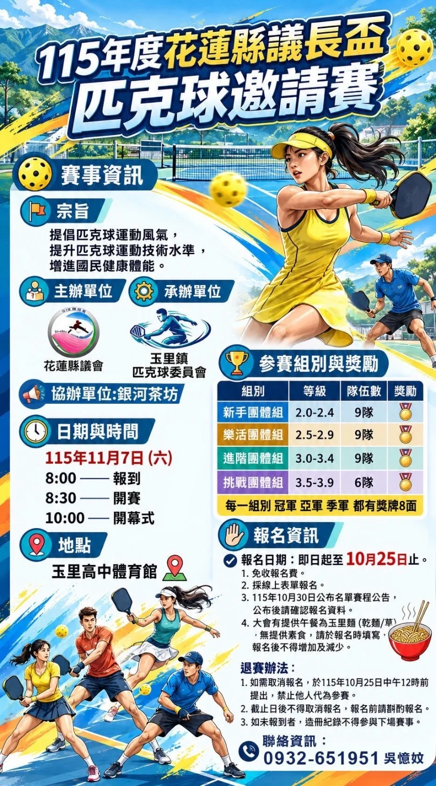

115 年度花蓮縣議長盃匹克球邀請賽將於 2026 年 11 月 7 日（六）在玉里高中體育館舉行。採團體賽，報名免費，報名截止為 10 月 25 日。
日期與地點
- 比賽地點：玉里高中體育館
- 報到：08:00–08:30
- 開賽：08:30
- 開幕式：10:00
- 參賽名單與賽程：10 月 30 日公布
參賽組別
- 新手團體組：2.0–2.4 級，9 隊
- 樂活團體組：2.5–2.9 級，9 隊
- 進階團體組：3.0–3.4 級，9 隊
- 挑戰團體組：3.5–3.9 級，6 隊
每隊登錄 6–8 名選手。每位選手限報一支隊伍，不得跨組或跨隊報名，資格以大會規定為準。海報載明各組冠、亞、季軍各有獎牌 8 面。
報名與注意事項
請透過線上報名表報名。大會提供玉里麵午餐（乾麵／葷食），不提供素食。午餐需求須在報名時填寫，報名後不得增減。
如需取消，請於 10 月 25 日中午 12:00 前提出，禁止他人代為參賽。未報到者，大會將造冊紀錄，不得參與下場賽事。
主承辦單位
- 主辦：花蓮縣議會
- 承辦：玉里鎮匹克球委員會
- 協辦：銀河茶坊
- 報名聯絡：吳憶妏，0932-651-951
資訊依使用者提供海報與公開報名表整理，實際名額及最新安排請以主辦單位公告為準。HLPB 為資訊整理站，並非賽事主辦單位。
最後查證：2026-10-08｜資料來源：使用者提供賽事海報與公開報名表
返回最新消息